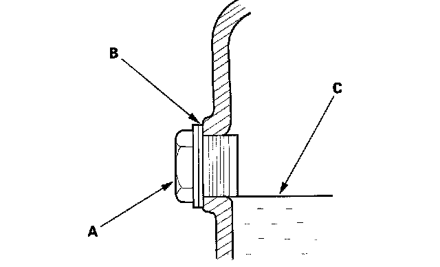
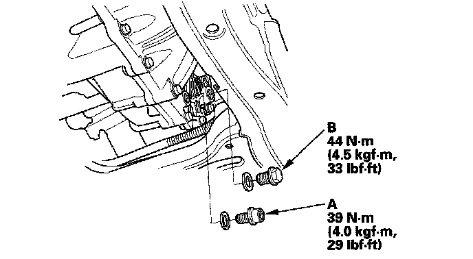

Fluid - M/T: Service and Repair
Transmission Fluid Inspection and Replacement1. Raise the vehicle on the lift.
2. Remove the filler plug (A) and washer (B), check the condition of the fluid, and make sure it is at the proper level (C).

3. If the fluid is dirty, remove the drain plug (A), and drain it.

4. Install the drain plug with a new washer, and refill the transmission fluid to the proper level.
Fluid Capacity
1.5 L (1.6 US qt) at fluid change
1.7 L (1.8 US qt) at overhaul
Always use Honda Manual Transmission Fluid (MTF). Using engine oil can cause stiffer shifting because it does not contain the proper additives.
5. Install the filler plug (B) with a new washer.
6. If the maintenance minder required to replace the fluid, reset the maintenance minder. If it did not reset, select BODY ELECTRICAL, GAUGES, ADJUSTMENT, MAINTENANCE MINDER, RESET, MAINTENANCE SUB ITEM 3 with the HDS.